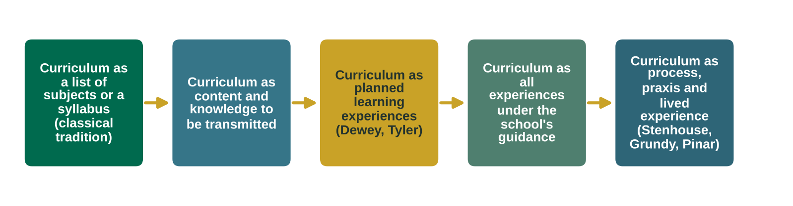
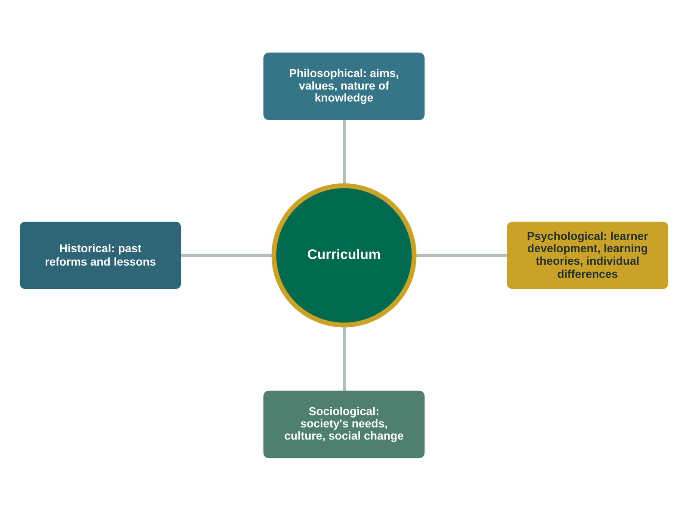
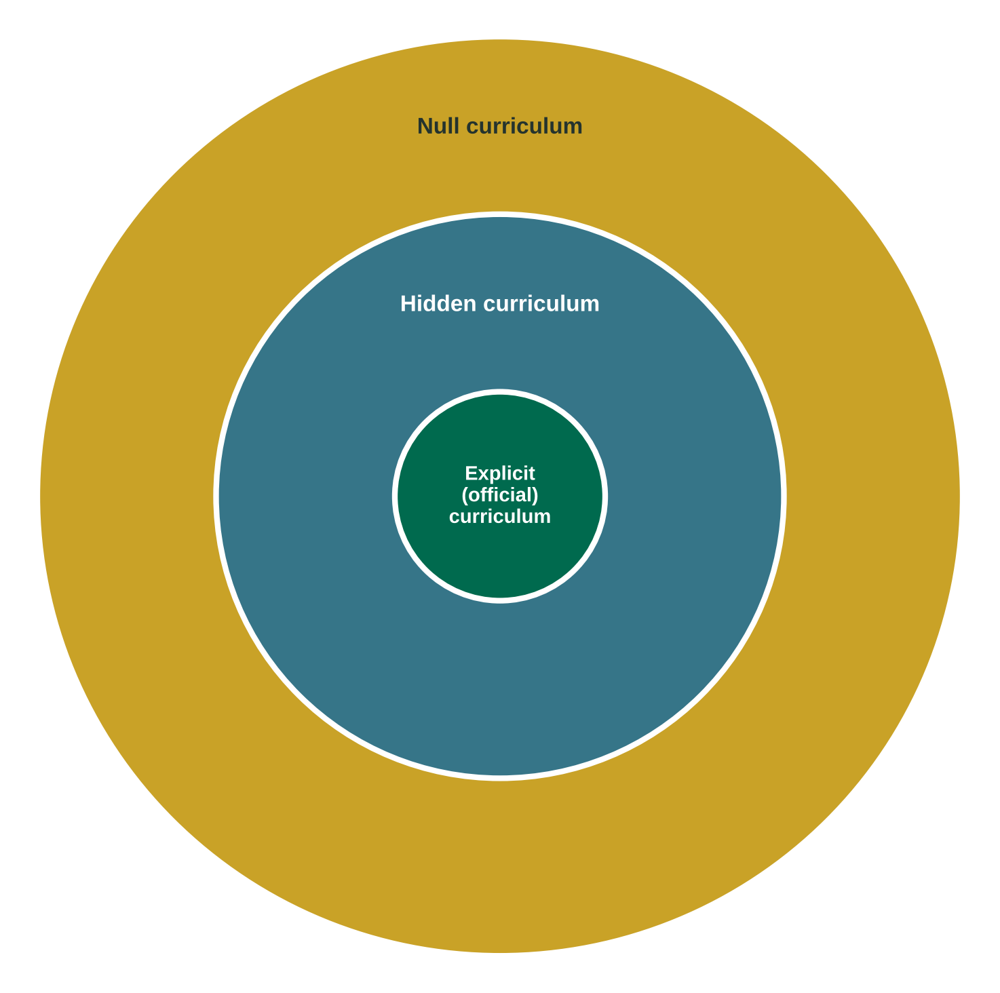
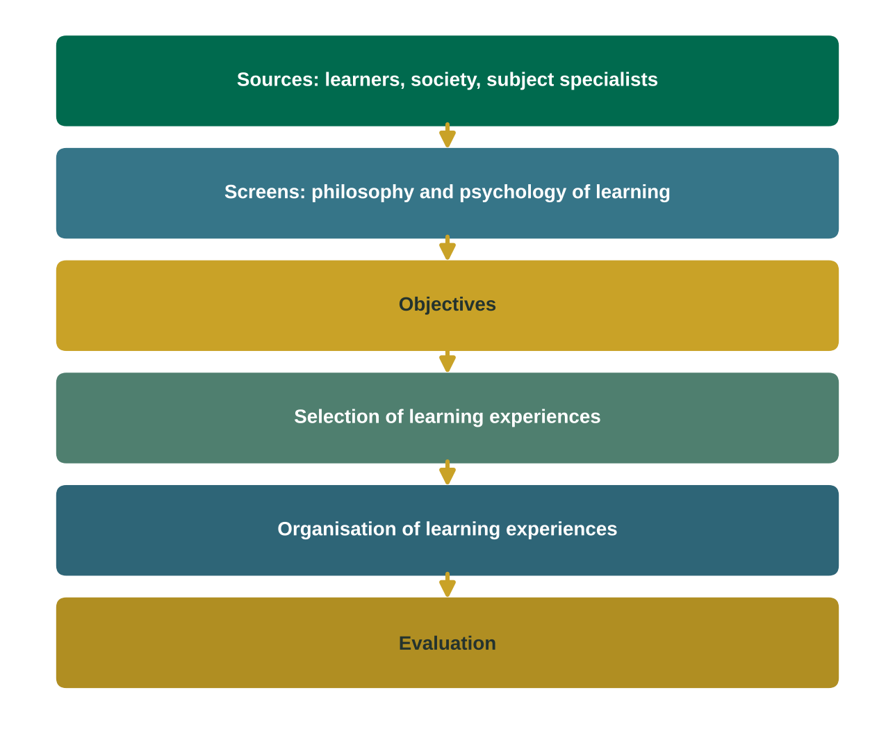
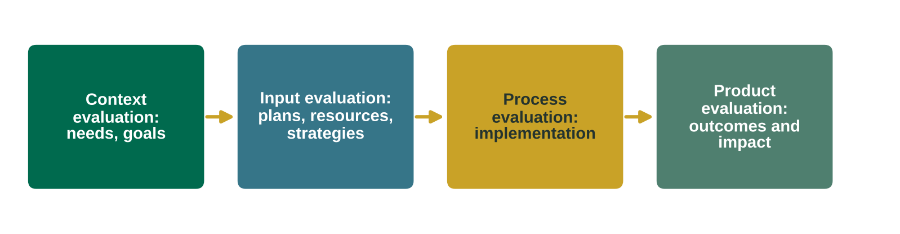

PC 120 শিক্ষাক্রম পরিচিতি
শিক্ষাক্রমের ধারণা, প্রকারভেদ, ভিত্তি, উন্নয়ন মডেল এবং বাংলাদেশের শিক্ষাক্রম
এটি ইংরেজি পাঠ নোটের বাংলা সংস্করণ। পাঠতালিকা ও তথ্যসূত্রের বইয়ের নাম মূল ভাষায় রাখা হয়েছে, যাতে লাইব্রেরিতে সহজে খুঁজে পান।
সূচিপত্র
এই কোর্স সম্পর্কে
শিক্ষাক্রম (curriculum) যেকোনো শিক্ষাব্যবস্থার প্রাণকেন্দ্র: কী শেখা উচিত, কেন, কীভাবে এবং তা শেখা হয়েছে কি না কীভাবে জানা যাবে, শিক্ষাক্রম এসব প্রশ্নের উত্তর দেয়। এই কোর্সে শিক্ষাক্রমের অর্থ সংকীর্ণ থেকে ব্যাপক ধারণায় কীভাবে বিস্তৃত হয়েছে তা অনুসরণ করা হয়েছে; অভীষ্ট, বাস্তবায়িত ও অর্জিত শিক্ষাক্রম এবং শিক্ষাক্রমের নানা ধরন (কেন্দ্রীভূত, যোগ্যতাভিত্তিক, সমন্বিত, অপ্রকাশ্য (hidden), শূন্য (null)) পৃথক করা হয়েছে; দার্শনিক, মনোবৈজ্ঞানিক, সমাজতাত্ত্বিক ও ঐতিহাসিক ভিত্তি ব্যাখ্যা করা হয়েছে; শিক্ষাক্রম উন্নয়নের প্রধান মডেলসমূহ (Tyler, Taba, Wheeler, Nicholls, Print, Walker, Kerr) এবং পরিস্থিতি বিশ্লেষণ থেকে মূল্যায়ন পর্যন্ত প্রতিটি ধাপ বিশ্লেষণ করা হয়েছে; এবং বাংলাদেশের প্রাক-প্রাথমিক, প্রাথমিক ও মাধ্যমিক শিক্ষাক্রম সমালোচনামূলকভাবে পরীক্ষা করা হয়েছে।
কোর্সের উদ্দেশ্য
শিক্ষাক্রমের উৎপত্তি, অর্থ, প্রকৃতি, পরিধি, উপাদান ও ভিত্তি ব্যাখ্যা করতে পারবেন।
শিক্ষাক্রমের ধরন ও সংশ্লিষ্ট ধারণাসমূহের মধ্যে পার্থক্য করতে পারবেন।
শিক্ষাক্রম উন্নয়নের মডেলসমূহ এবং উন্নয়ন প্রক্রিয়ার প্রতিটি উপাদান বিশ্লেষণ করতে পারবেন।
বাংলাদেশের প্রাক-প্রাথমিক, প্রাথমিক ও মাধ্যমিক শিক্ষাক্রম সমালোচনামূলকভাবে বিশ্লেষণ করতে এবং উন্নয়নের পরামর্শ দিতে পারবেন।
প্রতিটি ইউনিট অফিশিয়াল পাঠ্যসূচির ক্রম অনুসরণ করে। প্রথমে মূল আলোচনা পড়ুন, তারপর মূল কথা বক্সগুলো, এরপর পরীক্ষার প্রস্তুতি প্রশ্ন দিয়ে নিজেকে যাচাই করুন।
সোনালি বক্স = অবশ্যই মনে রাখার বিষয়। সবুজাভ নীল বক্স = সংজ্ঞা ও পড়ার কৌশল। সবুজ বক্স = বাংলাদেশ প্রেক্ষাপট।
শেষ অধ্যায়টি বিশ্ববিদ্যালয় পরীক্ষার ধরনে একটি প্রশ্নব্যাংক (উত্তরসহ MCQ, সংক্ষিপ্ত ও রচনামূলক প্রশ্ন), এরপর APA 7th রীতিতে পূর্ণ তথ্যসূত্র।
ভর্তি, বাজেট ও নীতি সংক্রান্ত পরিসংখ্যান প্রতি বছর বদলায়। পরীক্ষার আগে BANBEIS, DPE, UGC ও UNESCO-এর সর্বশেষ তথ্য দেখে নিন।
ইউনিট ১: শিক্ষাক্রমের ধারণা
অধ্যায়ের সারসংক্ষেপ
শিক্ষাক্রম (curriculum) শব্দটি এসেছে লাতিন ক্রিয়া currere , অর্থাৎ "দৌড়ানো", এবং বিশেষ্য curriculum , অর্থাৎ "দৌড়ের পথ" বা "দৌড়ের মাঠ" থেকে। এই উপমা অনুসারে, শিক্ষাক্রম হলো সেই পথ, যা অতিক্রম করে শিক্ষার্থীরা শিক্ষার লক্ষ্যে পৌঁছায়।
এই অধ্যায়ে যা আছে: উৎপত্তি, অর্থ, ধারণা, প্রকৃতি ও পরিধি; ঐতিহাসিক প্রেক্ষাপটে শিক্ষাক্রমের তাৎপর্য (সংকীর্ণ থেকে ব্যাপক); শিক্ষাক্রম ও পাঠ্যসূচি; শিক্ষাক্রমের উপাদান ও বৈশিষ্ট্য; শিক্ষাক্রমের ভিত্তি।
শিক্ষাক্রমে যা বলা হয়েছেইউনিট ১: শিক্ষাক্রমের ধারণা · ৭ সংযোগ ঘণ্টা
এই ইউনিট শেষে শিক্ষার্থীরা যা পারবে
- শিক্ষাক্রমের ধারণা, প্রকৃতি, পরিধি ও বৈশিষ্ট্য ব্যাখ্যা করতে পারবেন
- শিক্ষাক্রম ও পাঠ্যসূচি শব্দ দুটির মধ্যে পার্থক্য করতে পারবেন
- শিক্ষাক্রমের উপাদানসমূহের পারস্পরিক সম্পর্ক চিহ্নিত করতে পারবেন
- উদাহরণসহ শিক্ষাক্রমের বিভিন্ন ভিত্তি ব্যাখ্যা করতে পারবেন
- শিক্ষাক্রম: উৎপত্তি, অর্থ, ধারণা, প্রকৃতি ও পরিধি
- ঐতিহাসিক প্রেক্ষাপটে শিক্ষাক্রম শব্দের তাৎপর্য (সংকীর্ণ থেকে ব্যাপক)
- শিক্ষাক্রম ও পাঠ্যসূচি
- শিক্ষাক্রমের উপাদান ও বৈশিষ্ট্য
- শিক্ষাক্রমের ভিত্তি: দার্শনিক, মনোবৈজ্ঞানিক, সমাজতাত্ত্বিক ও ঐতিহাসিক
১.১ উৎপত্তি, অর্থ, ধারণা, প্রকৃতি ও পরিধি
শিক্ষাক্রম (curriculum) শব্দটি এসেছে লাতিন ক্রিয়া currere, অর্থাৎ "দৌড়ানো", এবং বিশেষ্য curriculum, অর্থাৎ "দৌড়ের পথ" বা "দৌড়ের মাঠ" থেকে। এই উপমা অনুসারে, শিক্ষাক্রম হলো সেই পথ, যা অতিক্রম করে শিক্ষার্থীরা শিক্ষার লক্ষ্যে পৌঁছায়।
বিভিন্ন সংজ্ঞায় অর্থের ব্যাপ্তি স্পষ্ট হয়:
"বিদ্যালয় কর্তৃক পরিকল্পিত ও পরিচালিত সকল শিখন, তা দলগতভাবে বা এককভাবে, বিদ্যালয়ের ভেতরে বা বাইরে যেভাবেই সম্পন্ন হোক না কেন" (Kerr, 1968)।
"শিখনের একটি পরিকল্পনা" (Taba, 1962)।
"জ্ঞান ও অভিজ্ঞতার পুনর্গঠন, যা বিদ্যালয়ের তত্ত্বাবধানে পদ্ধতিগতভাবে বিকশিত হয়, যাতে শিক্ষার্থী জ্ঞান ও অভিজ্ঞতার ওপর তার নিয়ন্ত্রণ বাড়াতে পারে" (Tanner & Tanner, 1980)।
"একটি শিক্ষা প্রস্তাবের অপরিহার্য নীতি ও বৈশিষ্ট্যসমূহ এমনভাবে উপস্থাপনের প্রচেষ্টা, যাতে তা সমালোচনামূলক পর্যালোচনার জন্য উন্মুক্ত থাকে এবং কার্যকরভাবে অনুশীলনে রূপান্তরযোগ্য হয়" (Stenhouse, 1975)।
পাইনার (Pinar)-এর (1975) currere: শিক্ষার্থীর যাপিত, আত্মজৈবনিক অভিজ্ঞতা হিসেবে শিক্ষাক্রম।
প্রকৃতি: গতিশীল, লক্ষ্যাভিমুখী, পরিকল্পিত, সর্বব্যাপী, সংস্কৃতিনির্ভর, মূল্যবোধসম্পৃক্ত এবং নিরন্তর সংশোধনযোগ্য।
পরিধি: লক্ষ্য ও উদ্দেশ্য, বিষয়বস্তু, শিখন অভিজ্ঞতা, শিখন-শেখানো কৌশল, উপকরণ, মূল্যায়ন, সহশিক্ষাক্রমিক কার্যক্রম, শিখন পরিবেশ এবং ব্যাপকতম অর্থে বিদ্যালয়ের নির্দেশনায় সংঘটিত সকল অভিজ্ঞতা।
১.২ ঐতিহাসিক প্রেক্ষাপটে শিক্ষাক্রমের তাৎপর্য (সংকীর্ণ থেকে ব্যাপক)

চিত্র ১. সময়ের সঙ্গে শিক্ষাক্রমের অর্থের বিস্তার
স্মিথ (Smith) (1996, 2000) চারটি দৃষ্টিভঙ্গি পৃথক করেছেন: শিক্ষাক্রম জ্ঞানের সমষ্টি হিসেবে (পাঠ্যসূচি), ফল হিসেবে (উদ্দেশ্য; Tyler), প্রক্রিয়া হিসেবে (মিথস্ক্রিয়া; Stenhouse) এবং প্র্যাক্সিস হিসেবে (মুক্তির লক্ষ্যে অঙ্গীকারবদ্ধ কর্ম; Grundy, 1987)।
১.৩ শিক্ষাক্রম ও পাঠ্যসূচি
| ভিত্তি | শিক্ষাক্রম | পাঠ্যসূচি |
|---|---|---|
| পরিধি | ব্যাপক: সমগ্র শিক্ষা কার্যক্রম | সংকীর্ণ: একটি বিষয় বা কোর্স |
| উপাদান | লক্ষ্য, বিষয়বস্তু, পদ্ধতি, উপকরণ, মূল্যায়ন, সহশিক্ষাক্রমিক কার্যক্রম | বিষয়সমূহ, বিষয়বস্তুর রূপরেখা, সময় বণ্টন, কখনো কখনো মূল্যায়ন |
| প্রণয়নকারী | জাতীয় সংস্থা (NCTB), প্রতিষ্ঠানসমূহ | বিষয় বিশেষজ্ঞ, বোর্ড, শিক্ষক |
| প্রকৃতি | নির্দেশনামূলক, দার্শনিক | বর্ণনামূলক, বিষয়নির্দিষ্ট |
| সম্পর্ক | পাঠ্যসূচিকে অন্তর্ভুক্ত করে | শিক্ষাক্রমের অংশ |
১.৪ শিক্ষাক্রমের উপাদান ও বৈশিষ্ট্য
")
চিত্র ২. শিক্ষাক্রমের চারটি পারস্পরিক সম্পর্কযুক্ত উপাদান (Tyler-এর উপাদানসমূহ)
একটি ভালো শিক্ষাক্রমের বৈশিষ্ট্য: সুস্পষ্ট লক্ষ্য এবং শিক্ষার্থী ও সমাজের চাহিদার ওপর ভিত্তি করে প্রণীত; প্রাসঙ্গিক ও হালনাগাদ; বিভিন্ন ক্ষেত্র ও বিষয়ের মধ্যে ভারসাম্যপূর্ণ; স্থানীয় প্রেক্ষাপটে নমনীয় ও অভিযোজনযোগ্য; বৈচিত্র্যময় শিক্ষার্থীদের প্রতি একীভূত; যৌক্তিকভাবে বিন্যস্ত (ধারাবাহিকতা, ক্রম ও সমন্বয়); প্রাপ্ত সম্পদ দিয়ে বাস্তবায়নযোগ্য; সামঞ্জস্যপূর্ণ (উদ্দেশ্য, বিষয়বস্তু, পদ্ধতি ও মূল্যায়ন পরস্পর সংগতিপূর্ণ); এবং মূল্যায়ন ও সংশোধনের জন্য উন্মুক্ত।
১.৫ শিক্ষাক্রমের ভিত্তি

চিত্র ৩. শিক্ষাক্রমের ভিত্তি
দার্শনিক ভিত্তি লক্ষ্য ও মূল্যবোধ নির্ধারণ করে। চিরন্তনবাদ (perennialism) থেকে আসে "গ্রেট বুকস" শিক্ষাক্রম; সারবাদ (essentialism) থেকে মূল বিষয়সমূহ; প্রগতিবাদ (progressivism) থেকে অভিজ্ঞতা ও সমস্যাকেন্দ্রিক শিক্ষাক্রম; পুনর্গঠনবাদ (reconstructionism) থেকে সামাজিক সমস্যাভিত্তিক শিক্ষাক্রম; অস্তিত্ববাদ (existentialism) থেকে পছন্দের স্বাধীনতা ও শিল্পকলা (দেখুন PC 115)।
মনোবৈজ্ঞানিক ভিত্তি ক্রম, পদ্ধতি ও স্তর নির্ধারণে নির্দেশনা দেয়: জঁ পিয়াজে (Jean Piaget)-এর বিকাশের স্তর (বিমূর্তের আগে মূর্ত), জেরোম ব্রুনার (Jerome Bruner)-এর সর্পিল শিক্ষাক্রম (spiral curriculum) ("যেকোনো বিষয় বিকাশের যেকোনো স্তরে যেকোনো শিশুকে কোনো না কোনো বুদ্ধিবৃত্তিকভাবে সৎ রূপে কার্যকরভাবে শেখানো যায়"; Bruner, 1960), লেভ ভিগটস্কি (Lev Vygotsky)-এর নিকটবর্তী বিকাশের অঞ্চল (ZPD), আচরণবাদী উদ্দেশ্য এবং প্রেষণা ও বহুমুখী বুদ্ধির তত্ত্বসমূহ।
সমাজতাত্ত্বিক ভিত্তি: শিক্ষাক্রমকে সমাজের চাহিদা, সংস্কৃতি, মূল্যবোধ, অর্থনীতি ও পরিবর্তন (প্রযুক্তি, বিশ্বায়ন, জলবায়ু পরিবর্তন) প্রতিফলিত করতে হবে এবং সামাজিক সংহতি ও ন্যায্যতা প্রসারিত করতে হবে। "কার জ্ঞান?" (Apple, 1979) এই প্রশ্নটিও গুরুত্বপূর্ণ।
ঐতিহাসিক ভিত্তি: শিক্ষাক্রম কীভাবে বিবর্তিত হয়েছে (যেমন ঔপনিবেশিক থেকে জাতীয় শিক্ষাক্রম; বাংলাদেশে ১৯৭৬, ১৯৯৫, ২০১২ ও ২০২১ সালের সংস্কার) তা জানা থাকলে পুরোনো ভুলের পুনরাবৃত্তি এড়ানো যায়।
ইউনিট ২: শিক্ষাক্রম ও সংশ্লিষ্ট ধারণাসমূহ
শিক্ষাক্রমে যা বলা হয়েছেইউনিট ২: শিক্ষাক্রম ও সংশ্লিষ্ট ধারণাসমূহ · ৫ সংযোগ ঘণ্টা
এই ইউনিট শেষে শিক্ষার্থীরা যা পারবে
- শিক্ষাক্রম-সংক্রান্ত বিভিন্ন পরিভাষার পারস্পরিক সম্পর্ক ব্যাখ্যা করতে পারবেন
- শিক্ষাক্রমের বিভিন্ন ধরন বর্ণনা করতে পারবেন
- ব্যক্তিগত বিকাশে সহশিক্ষাক্রমিক কার্যক্রমের ভূমিকা চিহ্নিত করতে পারবেন
- অভীষ্ট, বাস্তবায়িত ও অর্জিত শিক্ষাক্রম
- শিক্ষাক্রমের ধরন:
- কেন্দ্রীভূত, আধা-কেন্দ্রীভূত ও বিকেন্দ্রীভূত শিক্ষাক্রম
- বিষয়বস্তুভিত্তিক শিক্ষাক্রম, শিক্ষার্থীকেন্দ্রিক শিক্ষাক্রম, কার্যক্রমভিত্তিক শিক্ষাক্রম, মূল
- স্ট্রিমিং (বিভাগ বিভাজন)
- একমুখী ও বহুমুখী শিক্ষাক্রম
- অপ্রকাশ্য শিক্ষাক্রম
- শূন্য শিক্ষাক্রম
- ভারসাম্যপূর্ণ শিক্ষাক্রম
- বিদ্যাশাখা ও বিদ্যাশাখাসমূহের পারস্পরিক সম্পর্ক
- আন্তঃবিষয়ক পদ্ধতি
- সহশিক্ষাক্রমিক কার্যক্রম
২.১ অভীষ্ট, বাস্তবায়িত ও অর্জিত শিক্ষাক্রম
")
চিত্র ৪. শিক্ষাক্রমের তিনটি স্তর (IEA; Travers & Westbury, 1989)
এই স্তরগুলোর মধ্যকার ব্যবধানই ব্যাখ্যা করে কেন সংস্কার প্রায়ই ব্যর্থ হয়: সুপরিকল্পিত অভীষ্ট শিক্ষাক্রম (intended curriculum)ও শিক্ষকদের প্রশিক্ষণের অভাব, বড় শ্রেণি বা উচ্চ-ঝুঁকির (high-stakes) পরীক্ষার কারণে দুর্বল হয়ে পড়তে পারে, ফলে অর্জিত শিক্ষাক্রম (achieved curriculum) অনেক সংকীর্ণ হয়ে যায়। গুডল্যাড (Goodlad) (1979) একই ধরনের একটি তালিকা প্রস্তাব করেছিলেন: আদর্শ, আনুষ্ঠানিক, অনুভূত, কার্যকর ও অভিজ্ঞতালব্ধ শিক্ষাক্রম।
২.২ শিক্ষাক্রমের ধরন
নিয়ন্ত্রণের ভিত্তিতে
| প্রকার | বৈশিষ্ট্যসমূহ | উদাহরণ |
|---|---|---|
| কেন্দ্রীভূত | জাতীয় কর্তৃপক্ষ কর্তৃক প্রণীত ও নিয়ন্ত্রিত, সর্বত্র অভিন্ন | বাংলাদেশ (NCTB), ঐতিহাসিকভাবে ফ্রান্স |
| আধা-কেন্দ্রীভূত | স্থানীয় অভিযোজনসহ জাতীয় কাঠামো | বিদ্যালয়ভিত্তিক পরিকল্পনাসহ ইংল্যান্ডের জাতীয় শিক্ষাক্রম |
| বিকেন্দ্রীভূত | রাজ্য, জেলা বা বিদ্যালয় কর্তৃক প্রণীত | যুক্তরাষ্ট্র (রাজ্য ও জেলা), ফিনল্যান্ড (জাতীয় মূল কাঠামোর মধ্যে স্থানীয় শিক্ষাক্রম) |
সংগঠন ও গুরুত্বের ভিত্তিতে
বিষয়বস্তু (বিষয়)-ভিত্তিক শিক্ষাক্রম: পৃথক পৃথক বিষয় ও বিদ্যাশাখাকে কেন্দ্র করে সংগঠিত; জ্ঞানের ওপর গুরুত্ব দেয়; শিক্ষককেন্দ্রিক।
শিক্ষার্থীকেন্দ্রিক শিক্ষাক্রম: শিক্ষার্থীর চাহিদা, আগ্রহ ও বিকাশকে কেন্দ্র করে সংগঠিত (Rousseau, Dewey, Rogers)।
কার্যক্রমভিত্তিক শিক্ষাক্রম: কার্যক্রম, প্রকল্প ও অভিজ্ঞতার মাধ্যমে শিখন (Kilpatrick)।
মূল শিক্ষাক্রম (core curriculum): সকল শিক্ষার্থীর জন্য আবশ্যিক অপরিহার্য বিষয় বা শিখনের একটি অভিন্ন সমষ্টি, যার চারপাশে থাকে ঐচ্ছিক বিষয়। জাতীয় শিক্ষানীতি ২০১০ (NEP 2010) সাধারণ, মাদ্রাসা ও কারিগরি ধারায় একটি অভিন্ন মূল অংশ নির্ধারণ করেছিল।
সমন্বিত শিক্ষাক্রম (integrated curriculum): বিভিন্ন বিষয়ের বিষয়বস্তুকে কোনো থিম, সমস্যা বা ধারণাকে কেন্দ্র করে একত্র করা হয় (বহুবিষয়ক → আন্তঃবিষয়ক → বিষয়াতীত; Drake, 1998)।
যোগ্যতাভিত্তিক শিক্ষাক্রম (CBC): শিক্ষার্থীদের যেসব যোগ্যতা (সমন্বিত জ্ঞান, দক্ষতা, দৃষ্টিভঙ্গি ও মূল্যবোধ) প্রদর্শন করতে হবে তা নির্ধারণ করে; দক্ষতা অর্জনের (mastery) ভিত্তিতে অগ্রগতি ঘটে। বাংলাদেশের প্রাথমিক শিক্ষাক্রম ১৯৯০-এর দশক থেকে যোগ্যতাভিত্তিক; জাতীয় শিক্ষাক্রম রূপরেখা ২০২১ (NCF 2021) যোগ্যতাভিত্তিক পদ্ধতিকে সকল স্তরে সম্প্রসারিত করেছে।
ফলাফলভিত্তিক শিক্ষাক্রম (OBE): সুস্পষ্টভাবে নির্ধারিত শিখনফল দিয়ে শুরু করে পশ্চাৎমুখীভাবে নকশা করা হয় (Spady, 1994); উচ্চশিক্ষার অ্যাক্রেডিটেশনে ব্যাপকভাবে ব্যবহৃত (যেমন প্রকৌশলে Washington Accord; বাংলাদেশে BAC-এর শর্তাবলি)।
২.৩ স্ট্রিমিং
স্ট্রিমিং (streaming) বলতে সাধারণত অষ্টম শ্রেণির পর অর্জন বা পছন্দের ভিত্তিতে শিক্ষার্থীদের পৃথক পৃথক ধারায় (যেমন বিজ্ঞান, মানবিক, ব্যবসায় শিক্ষা) বিভক্ত করাকে বোঝায়। পক্ষে যুক্তি: বিশেষায়ণ, দক্ষ শিক্ষাদান। বিপক্ষে যুক্তি: অল্প বয়সে তকমা দেওয়া, বৈষম্য (নিম্ন আয়ের ও গ্রামীণ শিক্ষার্থীরা প্রায়ই কম মূল্যায়িত ধারায় চলে যায়), সংকীর্ণ শিক্ষা। জাতীয় শিক্ষাক্রম রূপরেখা ২০২১ একাদশ শ্রেণি পর্যন্ত স্ট্রিমিং স্থগিত রাখার প্রস্তাব করেছিল; এটি ছিল সবচেয়ে বিতর্কিত সংস্কারগুলোর একটি।
২.৪ একমুখী ও বহুমুখী শিক্ষাক্রম
একমুখী শিক্ষাক্রম (unified curriculum): একটি স্তরের সকল শিক্ষার্থীর জন্য একই শিক্ষাক্রম (যেমন অভিন্ন প্রাথমিক শিক্ষাক্রম)।
বহুমুখী শিক্ষাক্রম (diversified curriculum): বিভিন্ন সামর্থ্য, আগ্রহ ও পেশাগত লক্ষ্য পূরণের জন্য ভিন্ন ভিন্ন শিক্ষাক্রম বা বিকল্প (যেমন বৃত্তিমূলক ধারা, ঐচ্ছিক বিষয়)।
কুদরাত-এ-খুদা শিক্ষা কমিশন (১৯৭৪) একমুখী প্রাথমিক ও নিম্ন মাধ্যমিক শিক্ষা এবং তার পরে বহুমুখীকরণের সুপারিশ করেছিল।
২.৫ অপ্রকাশ্য, শূন্য ও ভারসাম্যপূর্ণ শিক্ষাক্রম
অপ্রকাশ্য শিক্ষাক্রম (hidden curriculum): বিদ্যালয়জীবনের মধ্য দিয়ে শিক্ষার্থীরা যেসব অলিখিত, অনানুষ্ঠানিক শিক্ষা, মূল্যবোধ ও রীতিনীতি অর্জন করে, যেমন আনুগত্য, সময়ানুবর্তিতা, প্রতিযোগিতা ও জেন্ডার ভূমিকা (Jackson, 1968; Apple, 1979)। উদাহরণ: যদি কেবল ছেলেদের বেঞ্চ তুলতে এবং কেবল মেয়েদের সাজসজ্জা করতে বলা হয়, তবে মুখে না বলেও জেন্ডার গৎবাঁধা ধারণা শেখানো হয়।
শূন্য শিক্ষাক্রম (null curriculum): বিদ্যালয় যা শেখায় না, অর্থাৎ বাদ দেওয়ার মাধ্যমে যা ঘটে, তাও কিছু না কিছু শেখায় (Eisner, 1979)। উদাহরণ: যৌনতা শিক্ষা, স্থানীয় আদিবাসী ইতিহাস, সমালোচনামূলক গণমাধ্যম সাক্ষরতা বা আর্থিক সাক্ষরতা অনুপস্থিত থাকতে পারে।
ভারসাম্যপূর্ণ শিক্ষাক্রম (balanced curriculum): বিভিন্ন ক্ষেত্র (জ্ঞানীয়, আবেগীয়, মনোপেশিজ), বিষয়, তত্ত্ব ও অনুশীলন, স্থানীয় ও বৈশ্বিক, মূল ও ঐচ্ছিক এবং ব্যক্তিগত ও সামাজিক চাহিদার মধ্যে যথাযথ ভারসাম্য।

চিত্র ৫. শিক্ষার্থীরা প্রকৃতপক্ষে শিক্ষাক্রমের যে স্তরগুলো অভিজ্ঞতা করে
২.৬ বিদ্যাশাখা ও বিদ্যাশাখাসমূহের পারস্পরিক সম্পর্ক
বিদ্যাশাখা (discipline) হলো নিজস্ব ধারণা ও পদ্ধতিসম্পন্ন জ্ঞানের সংগঠিত ক্ষেত্র। সহসম্পর্ক স্থাপন (correlation) বলতে বোঝায় সচেতনভাবে বিভিন্ন বিষয়ের বিষয়বস্তুর মধ্যে সম্পর্ক স্থাপন, যাতে এক বিষয়ের শিখন অন্য বিষয়ের শিখনকে শক্তিশালী করে (যেমন ভূগোলে উপাত্ত পড়ানোর একই সময়ে গণিতে লেখচিত্র পড়ানো)। হার্বার্ট (Herbart)-এর অনুসারীরা সহসম্পর্ক স্থাপন এবং কেন্দ্রীকরণ (concentration) (একটি কেন্দ্রীয় মূল বিষয়ের চারপাশে অন্যান্য বিষয় সংগঠিত করা) সমর্থন করতেন।
২.৭ আন্তঃবিষয়ক পদ্ধতি
গুরুত্বপূর্ণ থিমগুলো একটি একক বিষয় হিসেবে না পড়িয়ে একাধিক বিষয়ের মধ্য দিয়ে পড়ানো হয়: যেমন পরিবেশ, জেন্ডার, তথ্য ও যোগাযোগ প্রযুক্তি (ICT), মূল্যবোধ, দুর্যোগ ঝুঁকি হ্রাস, স্বাস্থ্য, নাগরিকত্ব ও টেকসই উন্নয়ন। বাংলাদেশে জলবায়ু পরিবর্তন, জেন্ডার সমতা ও ICT-এর মতো আন্তঃবিষয়ক বিষয়গুলো NCTB-এর বিভিন্ন পাঠ্যপুস্তকে স্থান পেয়েছে।
২.৮ সহশিক্ষাক্রমিক কার্যক্রম
যেসব কার্যক্রম আনুষ্ঠানিক শিক্ষাক্রমের পরিপূরক (খেলাধুলা, বিতর্ক, সাংস্কৃতিক অনুষ্ঠান, স্কাউটিং, ক্লাব)। এগুলো নেতৃত্ব, দলগত কাজ, সৃজনশীলতা, শারীরিক স্বাস্থ্য ও নাগরিকত্ব বিকশিত করে এবং ক্রমশ যোগ্যতাভিত্তিক শিক্ষাক্রম ও মূল্যায়নের সঙ্গে সমন্বিত হচ্ছে।
ইউনিট ৩: শিক্ষাক্রম উন্নয়ন প্রক্রিয়া
অধ্যায়ের সারসংক্ষেপ
উদ্দেশ্য (লক্ষ্য, অভীষ্ট, যোগ্যতা, শিখনফল), বিষয়বস্তু, শিখন অভিজ্ঞতা/কৌশল, উপকরণ এবং মূল্যায়ন। উন্নয়ন হলো এই উপাদানগুলোর পদ্ধতিগত পরিকল্পনা, বাস্তবায়ন ও মূল্যায়নের প্রক্রিয়া।
এই অধ্যায়ে যা আছে: শিক্ষাক্রমের প্রধান উপাদান; পরিস্থিতি বিশ্লেষণ; শিক্ষাক্রম উন্নয়নের মডেল; লক্ষ্য ও উদ্দেশ্য প্রণয়ন; বিষয়বস্তু নির্বাচন ও সংগঠন; শিক্ষণ উপকরণ প্রণয়ন; শিক্ষণ কৌশল নির্বাচন ও সংগঠন; শিক্ষার্থীর শিখন মূল্যায়ন; শিক্ষাক্রম প্রচার; বাস্তবায়ন ও পরিবীক্ষণ; নিরবচ্ছিন্ন প্রক্রিয়া হিসেবে শিক্ষাক্রম।
শিক্ষাক্রমে যা বলা হয়েছেইউনিট ৩: শিক্ষাক্রম উন্নয়ন প্রক্রিয়া · ১০ সংযোগ ঘণ্টা
এই ইউনিট শেষে শিক্ষার্থীরা যা পারবে
- শিক্ষাক্রমের প্রধান উপাদানসমূহ ও তাদের পারস্পরিক সম্পর্ক ব্যাখ্যা করতে পারবেন
- শিক্ষাক্রম উন্নয়নের পটভূমি ব্যাখ্যা করতে পারবেন
- শিক্ষাক্রম পরিকল্পনা ও উন্নয়নের নীতিসমূহ বর্ণনা করতে পারবেন
- পরিস্থিতি বিশ্লেষণের প্রয়োজনীয়তা ও কাজসমূহ ব্যাখ্যা করতে পারবেন
- নির্বাচিত মডেলসমূহের ভিত্তিতে বাংলাদেশের জন্য একটি শিক্ষাক্রম উন্নয়ন মডেল প্রস্তাব করতে পারবেন
- বিভিন্ন উৎস, শ্রেণিবিভাগ ও শিখনের ক্ষেত্র অনুযায়ী লক্ষ্য ও উদ্দেশ্য প্রণয়ন করতে পারবেন
- বিষয়বস্তু নির্বাচন ও সংগঠন করতে পারবেন
- শিক্ষণ উপকরণ প্রণয়নের প্রক্রিয়া ব্যাখ্যা করতে পারবেন
- শিক্ষণ কৌশল নির্বাচন ও সংগঠন করতে পারবেন
- মূল্যায়ন ও যাচাইয়ের কৌশলসমূহ বর্ণনা করতে পারবেন
- শিক্ষাক্রম প্রচারের প্রক্রিয়া আলোচনা করতে পারবেন
- বাস্তবায়ন প্রক্রিয়া ও পরিবীক্ষণ কৌশল আলোচনা করতে পারবেন
- শিক্ষাক্রমের নিরবচ্ছিন্ন পরিবর্তন ও উন্নয়নের প্রয়োজনীয়তা ব্যাখ্যা করতে পারবেন
- শিক্ষাক্রমের প্রধান উপাদানসমূহ
- পরিস্থিতি বিশ্লেষণ: পরিস্থিতির উপাদান ও বিশ্লেষণের কাজ
- কয়েকটি নির্বাচিত মডেল: উদ্দেশ্যভিত্তিক মডেল (Tyler, Hilda Taba), চক্রাকার মডেল (Wheeler, Nicholls &
- শিক্ষার লক্ষ্য ও উদ্দেশ্য প্রণয়ন: উদ্দেশ্যের উৎস, শ্রেণিবিভাগ ও ক্ষেত্র
- বিষয়বস্তু নির্বাচন ও সংগঠন
- শিক্ষণ উপকরণ প্রণয়ন
- শিক্ষণ কৌশল নির্বাচন ও সংগঠন
- শিক্ষার্থীর শিখন মূল্যায়নের কৌশল
- শিক্ষাক্রম প্রচার
- বাস্তবায়ন ও পরিবীক্ষণ
- নিরবচ্ছিন্ন প্রক্রিয়া হিসেবে শিক্ষাক্রম: পরিবর্তনের প্রয়োজনীয়তা, শিক্ষাক্রম মূল্যায়ন, শিক্ষাক্রমের পরিমার্জন, সংশোধন ও নবায়ন
৩.১ শিক্ষাক্রমের প্রধান উপাদানসমূহ
উদ্দেশ্য (লক্ষ্য, অভীষ্ট, যোগ্যতা, শিখনফল), বিষয়বস্তু, শিখন অভিজ্ঞতা/কৌশল, উপকরণ এবং মূল্যায়ন। উন্নয়ন হলো এই উপাদানগুলোর পদ্ধতিগত পরিকল্পনা, বাস্তবায়ন ও মূল্যায়নের প্রক্রিয়া।
৩.২ পরিস্থিতি বিশ্লেষণ
পরিস্থিতি বিশ্লেষণ (situational analysis) হলো সিদ্ধান্ত গ্রহণের আগে যে প্রেক্ষাপটে শিক্ষাক্রম পরিচালিত হবে তার পদ্ধতিগত অনুসন্ধান (Skilbeck, 1984; Print, 1993)। এটি প্রাসঙ্গিকতা ও বাস্তবায়নযোগ্যতা নিশ্চিত করে।
| উপাদান | বিশ্লেষণযোগ্য উপাদান |
|---|---|
| সামাজিক ও সাংস্কৃতিক | মূল্যবোধ, সামাজিক পরিবর্তন, অর্থনীতি, শ্রমবাজারের চাহিদা, জাতীয় নীতি, SDGs |
| শিক্ষার্থী | বয়স, বিকাশের স্তর, পূর্বজ্ঞান, চাহিদা, আগ্রহ, বৈচিত্র্য, বিশেষ চাহিদা |
| শিক্ষক | যোগ্যতা, দক্ষতা, মনোভাব, কর্মভার, সংখ্যা |
| প্রতিষ্ঠান | সুযোগসুবিধা, সম্পদ, শ্রেণির আকার, ব্যবস্থাপনা, সময় |
| জ্ঞান ও বিদ্যাশাখা | বিষয়ক্ষেত্রের অগ্রগতি, নতুন জ্ঞান |
| বিদ্যমান শিক্ষাক্রম | সবল দিক, দুর্বল দিক, মূল্যায়নের ফলাফল, পাবলিক পরীক্ষা |
বিশ্লেষণের কাজ: দলিলপত্র ও গবেষণা পর্যালোচনা; জরিপ ও চাহিদা নিরূপণ পরিচালনা; অংশীজনদের (শিক্ষক, অভিভাবক, নিয়োগকর্তা, বিশেষজ্ঞ) সঙ্গে পরামর্শ; আন্তর্জাতিক শিক্ষাক্রমের সঙ্গে তুলনা; ঘাটতি চিহ্নিতকরণ; শিক্ষাক্রম নকশার জন্য প্রভাবসমূহের সারসংক্ষেপ তৈরি।
৩.৩ শিক্ষাক্রম উন্নয়নের মডেল
উদ্দেশ্যভিত্তিক (যৌক্তিক / রৈখিক) মডেল
*রাল্ফ টাইলার (Ralph Tyler) (1949), Basic Principles of Curriculum and Instruction।* "টাইলার যুক্তিকাঠামো" (Tyler rationale) চারটি প্রশ্ন উত্থাপন করে:
বিদ্যালয়ের কোন কোন শিক্ষাগত উদ্দেশ্য অর্জনের চেষ্টা করা উচিত? (উদ্দেশ্য)
কোন কোন শিক্ষাগত অভিজ্ঞতা প্রদান করলে এসব উদ্দেশ্য অর্জিত হওয়ার সম্ভাবনা রয়েছে? (শিখন অভিজ্ঞতা)
এসব শিক্ষাগত অভিজ্ঞতা কীভাবে কার্যকরভাবে সংগঠিত করা যায়? (সংগঠন)
এসব উদ্দেশ্য অর্জিত হচ্ছে কি না তা কীভাবে নির্ধারণ করা যায়? (মূল্যায়ন)
উদ্দেশ্য আসে তিনটি উৎস থেকে (শিক্ষার্থী-সংক্রান্ত অনুসন্ধান, সমকালীন জীবন-সংক্রান্ত অনুসন্ধান এবং বিষয় বিশেষজ্ঞদের পরামর্শ) এবং এগুলো দুটি ছাঁকনির মধ্য দিয়ে পরিশোধিত হয়: বিদ্যালয়ের দর্শন এবং শিখনের মনোবিজ্ঞান।

চিত্র ৬. টাইলারের শিক্ষাক্রম উন্নয়ন মডেল (1949)
*হিল্ডা টাবা (Hilda Taba) (1962), Curriculum Development: Theory and Practice। একটি আরোহী, তৃণমূলভিত্তিক* মডেল: যে শিক্ষকেরা তাঁদের শিক্ষার্থীদের চেনেন, তাঁদের অংশগ্রহণ করা উচিত। সাতটি ধাপ:
চাহিদা নির্ণয়
উদ্দেশ্য প্রণয়ন
বিষয়বস্তু নির্বাচন
বিষয়বস্তু সংগঠন
শিখন অভিজ্ঞতা নির্বাচন
শিখন অভিজ্ঞতা সংগঠন
কী মূল্যায়ন করা হবে এবং মূল্যায়নের উপায় ও মাধ্যম নির্ধারণ
চক্রাকার মডেল
*ডি. কে. হুইলার (D. K. Wheeler) (1967), Curriculum Process: টাইলারের মডেলকে একটি চক্রে সম্প্রসারিত করেন*, যার পাঁচটি পর্যায় রয়েছে এবং মূল্যায়নের ফলাফল আবার উদ্দেশ্যে ফিরে যায়: (১) লক্ষ্য, অভীষ্ট ও উদ্দেশ্য; (২) শিখন অভিজ্ঞতা নির্বাচন; (৩) বিষয়বস্তু নির্বাচন; (৪) শিখন অভিজ্ঞতা ও বিষয়বস্তুর সংগঠন ও সমন্বয়; (৫) মূল্যায়ন।
")
চিত্র ৭. হুইলারের চক্রাকার মডেল (1967)
*অড্রি ও হাওয়ার্ড নিকোলস (Audrey and Howard Nicholls) (1978), Developing a Curriculum: A Practical Guide: পরিস্থিতি বিশ্লেষণকে যুক্ত করেন* চক্রের সূচনাবিন্দু হিসেবে: পরিস্থিতি বিশ্লেষণ → উদ্দেশ্য নির্বাচন → বিষয়বস্তু নির্বাচন ও সংগঠন → পদ্ধতি নির্বাচন ও সংগঠন → মূল্যায়ন।
*মারে প্রিন্ট (Murray Print) (1993), Curriculum Development and Design: শিক্ষাক্রম পূর্বপ্রভাব (curriculum presage) সংবলিত একটি চক্রাকার মডেল* (যেসব শক্তি ও ব্যক্তি উন্নয়নকারীদের প্রভাবিত করে: শিক্ষাক্রমের ভিত্তি, উন্নয়নকারীদের ধারণা), এরপর পরিস্থিতি বিশ্লেষণ, লক্ষ্য, অভীষ্ট ও উদ্দেশ্য, বিষয়বস্তু, শিখন কার্যক্রম ও মূল্যায়ন, যেখানে সকল উপাদান পরস্পর মিথস্ক্রিয়া করে।
মিথস্ক্রিয়ামূলক (গতিশীল / প্রকৃতিবাদী) মডেল
ডেকার ওয়াকার (Decker Walker) (1971), "A naturalistic model for curriculum development": উন্নয়নকারীরা বাস্তবে কীভাবে কাজ করেন তা বর্ণনা করে। তিনটি পর্যায়:
প্ল্যাটফর্ম (platform): উন্নয়নকারীরা যেসব বিশ্বাস, তত্ত্ব, মূল্যবোধ ও লক্ষ্য নিয়ে আসেন।
আলোচনা-বিবেচনা (deliberation): বিকল্পসমূহ বিবেচনা করে পছন্দের বিষয়ে ঐকমত্যে পৌঁছানোর জন্য আলোচনা ও বিতর্ক।
শিক্ষাক্রম নকশা: সিদ্ধান্তসমূহ একটি পরিকল্পনা ও উপকরণে লিপিবদ্ধ করা হয়।
")
চিত্র ৮. ওয়াকারের প্রকৃতিবাদী মডেল (1971)
*জন কের (John Kerr) (1968), Changing the Curriculum: একটি মিথস্ক্রিয়ামূলক মডেল, যেখানে চারটি উপাদান (উদ্দেশ্য, জ্ঞান (বিষয়বস্তু), শিখন অভিজ্ঞতা ও মূল্যায়ন*) পরস্পর সংযুক্ত, ফলে যেকোনো উপাদান থেকে উন্নয়ন শুরু করা যায় এবং প্রতিটি উপাদান অন্যগুলোকে প্রভাবিত করে। ১.১-এ উদ্ধৃত প্রভাবশালী ব্যাপক সংজ্ঞাটিও কেরের অবদান।
| মডেল | প্রকার | সূচনাবিন্দু | শক্তিশালী দিক | সীমাবদ্ধতা |
|---|---|---|---|---|
| টাইলার | উদ্দেশ্যভিত্তিক, রৈখিক | উদ্দেশ্য | যৌক্তিক, সহজ, বহুল ব্যবহৃত | অনমনীয়, আচরণবাদী, প্রেক্ষাপট উপেক্ষা করে |
| টাবা | উদ্দেশ্যভিত্তিক, আরোহী | চাহিদা নির্ণয় | শিক্ষকের সম্পৃক্ততা, চাহিদাভিত্তিক | সময়সাপেক্ষ, তবুও রৈখিক |
| হুইলার | চক্রাকার | লক্ষ্য | নিরবচ্ছিন্ন; মূল্যায়নের ফলাফল আবার প্রক্রিয়ায় ফিরে যায় | তবুও উদ্দেশ্যচালিত |
| নিকোলস | চক্রাকার | পরিস্থিতি বিশ্লেষণ | প্রেক্ষাপট-সংবেদনশীল | অনুশীলনে জটিল |
| প্রিন্ট | চক্রাকার | শিক্ষাক্রম পূর্বপ্রভাব ও পরিস্থিতি বিশ্লেষণ | সর্বাঙ্গীণ, বাস্তবসম্মত | জটিল |
| ওয়াকার | মিথস্ক্রিয়ামূলক / প্রকৃতিবাদী | বিশ্বাসের প্ল্যাটফর্ম | বাস্তব চর্চা ও আলোচনা-বিবেচনার বর্ণনা দেয় | মূল্যায়ন বিষয়ে নির্দেশনা কম |
| কের | মিথস্ক্রিয়ামূলক | যেকোনো উপাদান | নমনীয় | সুস্পষ্ট ক্রমের অভাব |
৩.৪ লক্ষ্য ও উদ্দেশ্য প্রণয়ন
স্তরক্রম: লক্ষ্য (ব্যাপক, জাতীয়) → অভীষ্ট (স্তর বা কার্যক্রম-নির্দিষ্ট) → উদ্দেশ্য (বিষয়, ইউনিট, পাঠ) → শিখনফল।
উৎস: সমাজ, শিক্ষার্থী, বিষয়বস্তু, দর্শন, জাতীয় নীতি এবং আন্তর্জাতিক অঙ্গীকার (SDG 4)।
শ্রেণিবিভাগ ও ক্ষেত্র: জ্ঞানীয়, আবেগীয় ও মনোপেশিজ (Bloom ও সহযোগীরা; দেখুন PC 117)।
যোগ্যতা ও শিখনফল: যোগ্যতা (competency) বাস্তব প্রেক্ষাপটে কাজ সম্পাদনের জন্য জ্ঞান, দক্ষতা, দৃষ্টিভঙ্গি ও মূল্যবোধকে সমন্বিত করে। জাতীয় শিক্ষাক্রম রূপরেখা ২০২১ বাংলাদেশের জন্য দশটি মূল যোগ্যতা নির্ধারণ করেছে, যেমন যোগাযোগ, সমালোচনামূলক ও সৃজনশীল চিন্তন, সমস্যা সমাধান, সহযোগিতা, ডিজিটাল সাক্ষরতা ও বৈশ্বিক নাগরিকত্ব, এবং এগুলোকে শ্রেণিভিত্তিক বিষয়গত যোগ্যতা ও শিখনফলে রূপান্তর করেছে।
৩.৫ বিষয়বস্তু নির্বাচন ও সংগঠন
বিষয়বস্তু নির্বাচনের মানদণ্ড: তাৎপর্য, যথার্থতা, উপযোগিতা, আগ্রহ, শিখনযোগ্যতা, বাস্তবায়নযোগ্যতা, সামাজিক বাস্তবতার সঙ্গে সংগতি এবং উদ্দেশ্যের সঙ্গে সামঞ্জস্য (Ornstein & Hunkins, 2018)।
সংগঠনের নীতি:
পরিধি (scope): বিষয়বস্তুর ব্যাপ্তি ও গভীরতা।
ক্রম (sequence): বিন্যাসের ধারা (সহজ থেকে জটিল, কালানুক্রমিক, পূর্বশর্তমূলক শিখন, সমগ্র থেকে অংশ)।
ধারাবাহিকতা (continuity): সময়ের পরিক্রমায় মূল ধারণা ও দক্ষতার উল্লম্ব পুনরাবৃত্তি।
সমন্বয় (integration): বিভিন্ন বিষয়ের মধ্যে অনুভূমিক সংযোগ।
সংগতি (articulation): বিভিন্ন শ্রেণি ও বিষয়ের মধ্যে উল্লম্ব ও অনুভূমিক সামঞ্জস্য।
ভারসাম্য (balance)।
সংগঠনের ধরনের মধ্যে রয়েছে যৌক্তিক (বিষয়ের কাঠামো), মনোবৈজ্ঞানিক (শিক্ষার্থীর প্রস্তুতি), সর্পিল (Bruner: ক্রমবর্ধমান জটিলতার স্তরে ধারণাগুলোতে বারবার ফিরে আসা), এককেন্দ্রিক এবং বিষয়ভিত্তিক।

চিত্র ৯. ব্রুনারের সর্পিল শিক্ষাক্রম: মূল ধারণাগুলোতে ক্রমবর্ধমান গভীরতায় বারবার ফিরে আসা
৩.৬ শিক্ষণ উপকরণ প্রণয়ন
পাঠ্যপুস্তক, শিক্ষক সহায়িকা, অনুশীলন খাতা, সম্পূরক পঠন উপকরণ, ডিজিটাল বিষয়বস্তু ও মূল্যায়ন উপকরণ। প্রক্রিয়া: শিক্ষাক্রমের সঙ্গে সামঞ্জস্যপূর্ণ পরিকল্পনা → রচনা → বিশেষজ্ঞ পর্যালোচনা → বিদ্যালয়ে পরীক্ষামূলক প্রয়োগ → পরিমার্জন → মুদ্রণ ও বিতরণ। মানের মানদণ্ড: নির্ভুলতা, সামঞ্জস্য, পঠনযোগ্যতা, একীভূত ও জেন্ডার-সংবেদনশীল উপস্থাপন, আকর্ষণীয় নকশা, সক্রিয় শিখনের জন্য কার্যক্রম।
৩.৭ শিক্ষণ কৌশল নির্বাচন ও সংগঠন
কৌশলগুলোকে উদ্দেশ্য (যেমন মনোভাবের জন্য আলোচনা, দক্ষতার জন্য প্রদর্শন, উচ্চতর চিন্তনের জন্য অনুসন্ধান), শিক্ষার্থী ও সম্পদের সঙ্গে সামঞ্জস্যপূর্ণ হতে হবে। যোগ্যতাভিত্তিক শিক্ষাক্রম অভিজ্ঞতাভিত্তিক, সহযোগিতামূলক, প্রকল্পভিত্তিক ও অনুসন্ধানভিত্তিক কৌশলকে অগ্রাধিকার দেয়।
৩.৮ শিক্ষার্থীর শিখন মূল্যায়ন
মূল্যায়নকে উদ্দেশ্য ও যোগ্যতার সঙ্গে সামঞ্জস্যপূর্ণ হতে হবে; এতে গঠনকালীন (formative) ও সামষ্টিক (summative) মূল্যায়নের সমন্বয় থাকা উচিত, একাধিক পদ্ধতি ব্যবহার করা উচিত এবং জ্ঞানের পাশাপাশি উচ্চতর দক্ষতা ও মূল্যবোধও মূল্যায়ন করা উচিত (দেখুন PC 117)।
৩.৯ শিক্ষাক্রম প্রচার
প্রচার (dissemination) বলতে নতুন শিক্ষাক্রম সম্পর্কে শিক্ষক, প্রশাসক, অভিভাবক ও জনসাধারণকে অবহিত করাকে বোঝায়, যাতে তাঁরা তা বুঝতে ও গ্রহণ করতে পারেন। কৌশল: পরিচিতি ও প্রশিক্ষণ (ক্যাসকেড প্রশিক্ষণ, যাতে প্রায়ই বার্তা লঘু হয়ে যায়), শিক্ষক সহায়িকা, গণমাধ্যম প্রচারণা, অনলাইন প্ল্যাটফর্ম, প্রদর্শনী কেন্দ্র হিসেবে পাইলট বিদ্যালয় এবং অংশীজন সভা। হ্যাভলক (Havelock) (1971) প্রচারের গবেষণা–উন্নয়ন–বিস্তার, সামাজিক মিথস্ক্রিয়া এবং সমস্যা সমাধান মডেল বর্ণনা করেছেন।
৩.১০ বাস্তবায়ন ও পরিবীক্ষণ
বাস্তবায়ন (implementation) হলো শিক্ষাক্রমকে অনুশীলনে প্রয়োগ করা। ফুলান (Fullan) (2007) বাস্তবায়নকে প্রভাবিতকারী উপাদান চিহ্নিত করেছেন: পরিবর্তনের বৈশিষ্ট্য (প্রয়োজন, স্পষ্টতা, জটিলতা, মান), স্থানীয় উপাদান (জেলা, সম্প্রদায়, প্রধান শিক্ষক, শিক্ষক) এবং বাহ্যিক উপাদান (সরকার, সংস্থা)। উদ্বেগভিত্তিক গ্রহণ মডেল (CBAM) (Hall & Hord) শিক্ষকদের উদ্বেগের পর্যায় (সচেতনতা থেকে পুনঃকেন্দ্রীকরণ পর্যন্ত) এবং ব্যবহারের স্তর অনুসরণ করে।
পরিবীক্ষণ (monitoring) সমস্যা চিহ্নিত করতে ও সহায়তা দিতে বাস্তবায়ন সম্পর্কে চলমান তথ্য সংগ্রহ করে (শ্রেণিকক্ষ পর্যবেক্ষণ, বিদ্যালয় পরিদর্শন, জরিপ, শিখন মূল্যায়ন)।
৩.১১ নিরবচ্ছিন্ন প্রক্রিয়া হিসেবে শিক্ষাক্রম
সমাজ, জ্ঞান, প্রযুক্তি ও শিক্ষার্থীর চাহিদা বদলানোর সঙ্গে সঙ্গে শিক্ষাক্রমকেও বদলাতে হয়। শিক্ষাক্রম মূল্যায়ন (curriculum evaluation) শিক্ষাক্রমের উপযোগিতা বিচার করে। মডেলগুলোর মধ্যে রয়েছে টাইলারের উদ্দেশ্যভিত্তিক মডেল, স্টাফলবিমের (Stufflebeam) CIPP (Context, Input, Process, Product: প্রেক্ষাপট, উপকরণ, প্রক্রিয়া, ফল), স্টেক (Stake)-এর কাউন্টেন্যান্স মডেল, স্ক্রিভেন (Scriven)-এর লক্ষ্যমুক্ত এবং গঠনকালীন/সামষ্টিক মূল্যায়ন এবং কার্কপ্যাট্রিক (Kirkpatrick)-এর চার স্তর (প্রশিক্ষণের জন্য)। ফলাফলের ভিত্তিতে পরিমার্জন, সংশোধন ও নবায়ন করা হয়।

চিত্র ১০. শিক্ষাক্রম মূল্যায়নের স্টাফলবিম CIPP মডেল
ইউনিট ৪: বাংলাদেশের প্রাক-প্রাথমিক ও প্রাথমিক শিক্ষার শিক্ষাক্রম
অধ্যায়ের সারসংক্ষেপ
ভিত্তিমূলক শিখন শক্তিশালী করা; শিক্ষাক্রমের ভার কমানো; উন্নততর শিক্ষক প্রস্তুতি ও সহায়তা; পর্যাপ্ত সম্পদ ও ছোট শ্রেণি; পাইলটিংসহ নিয়মিত প্রমাণভিত্তিক পর্যালোচনা; শিক্ষাক্রম উন্নয়নে শিক্ষক ও সম্প্রদায়কে সম্পৃক্ত করা; যোগ্যতার সঙ্গে মূল্যায়নের সামঞ্জস্য বিধান; ন্যায্যতার প্রতি লক্ষ রেখে ICT-সমর্থিত শিখন সম্প্রসারণ।
এই অধ্যায়ে যা আছে: পটভূমি; বর্তমান প্রাক-প্রাথমিক শিক্ষাক্রমের প্রধান বৈশিষ্ট্য; বর্তমান প্রাথমিক শিক্ষাক্রমের প্রধান বৈশিষ্ট্য; সমালোচনামূলক বিশ্লেষণ: সবল দিক, দুর্বল দিক ও সমাধান; উন্নয়নের পরামর্শ।
শিক্ষাক্রমে যা বলা হয়েছেইউনিট ৪: বাংলাদেশের প্রাক-প্রাথমিক ও প্রাথমিক শিক্ষার শিক্ষাক্রম · ৯ সংযোগ ঘণ্টা
এই ইউনিট শেষে শিক্ষার্থীরা যা পারবে
- প্রাক-প্রাথমিক ও প্রাথমিক শিক্ষাক্রমের উৎপত্তি ও পটভূমি বর্ণনা করতে পারবেন
- লক্ষ্য ও উদ্দেশ্য, যোগ্যতা, প্রান্তিক যোগ্যতা, বিষয়ভিত্তিক প্রান্তিক যোগ্যতা এবং শ্রেণিভিত্তিক প্রান্তিক যোগ্যতা ব্যাখ্যা করতে পারবেন
- প্রাথমিক শিক্ষাক্রমের সংশোধন ও পরিবর্তনের কারণ ব্যাখ্যা করতে পারবেন
- সংশোধিত প্রাথমিক শিক্ষাক্রমের কিছু বিশেষ বৈশিষ্ট্য চিহ্নিত করতে পারবেন
- বিষয়ভিত্তিক শিক্ষাক্রমের কাঠামো বর্ণনা করতে পারবেন
- নির্ধারিত শিক্ষাক্রমে শিখন-শেখানো পদ্ধতি ও কৌশল ব্যাখ্যা করতে পারবেন
- প্রাথমিক শিক্ষাক্রমের বর্তমান মূল্যায়ন চর্চা বর্ণনা করতে পারবেন
- প্রাথমিক শিক্ষাক্রমের প্রধান সবল ও দুর্বল দিকসমূহ চিহ্নিত করতে পারবেন
- দুর্বলতা কাটিয়ে ওঠার এবং আরও উন্নয়নের সম্ভাব্য উপায় সুপারিশ করতে পারবেন
- পটভূমি: প্রাক-প্রাথমিক ও প্রাথমিক শিক্ষাক্রম
- বর্তমান প্রাক-প্রাথমিক শিক্ষাক্রমের প্রধান বৈশিষ্ট্য
- বর্তমান প্রাথমিক শিক্ষাক্রমের প্রধান বৈশিষ্ট্য
- শিক্ষাক্রমের সমালোচনামূলক বিশ্লেষণ: সবল ও দুর্বল দিক চিহ্নিতকরণ, সমস্যার সম্ভাব্য
- দুর্বলতা কাটিয়ে ওঠা ও আরও উন্নয়নের পরামর্শ
৪.১ পটভূমি
প্রাথমিক শিক্ষাক্রম: স্বাধীনতার পর জাতীয় শিক্ষাক্রম ও পাঠ্যসূচি প্রণয়ন কমিটি (১৯৭৬–৭৭) একটি নতুন প্রাথমিক শিক্ষাক্রম প্রণয়ন করে। ১৯৮৬–১৯৯১ সালে IDA/UNICEF-সহায়তাপুষ্ট প্রকল্পের আওতায় ৫৩টি প্রান্তিক যোগ্যতা সংবলিত একটি নতুন যোগ্যতাভিত্তিক প্রাথমিক শিক্ষাক্রম প্রণীত হয় (১৯৯২ সাল থেকে বিদ্যালয়ে চালু)। এটি ২০০২ সালে (৫০টি প্রান্তিক যোগ্যতা) এবং পুনরায় ২০১১–২০১২ সালে (২৯টি প্রান্তিক যোগ্যতা; বিষয়ভিত্তিক ও শ্রেণিভিত্তিক শিখনফল; ২০১৩ সাল থেকে নতুন পাঠ্যপুস্তক) পরিমার্জিত হয়।
প্রাক-প্রাথমিক শিক্ষাক্রম: জাতীয় শিক্ষানীতি ২০১০ পাঁচ বছর বয়সী শিশুদের জন্য এক বছরের প্রাক-প্রাথমিক শিক্ষা চালু করে; শিখন ক্ষেত্র ও খেলাভিত্তিক পদ্ধতিসহ প্রাক-প্রাথমিক শিক্ষাক্রম প্রণীত হয় (২০১১) এবং Operational Framework for Pre-primary Education (2008) ও PEDP3-এর আওতায় সম্প্রসারিত হয়।
জাতীয় শিক্ষাক্রম রূপরেখা ২০২১ (NCF 2021): দশটি মূল যোগ্যতাসহ প্রাক-প্রাথমিক থেকে দ্বাদশ শ্রেণি পর্যন্ত একটি একক রূপরেখা; দুই বছরের প্রাক-প্রাথমিক শিক্ষা; ২০২৩ সাল থেকে প্রথম শ্রেণিতে এবং পরবর্তীকালে অন্যান্য শ্রেণিতে নতুন প্রাথমিক পাঠ্যপুস্তক চালু।
৪.২ বর্তমান প্রাক-প্রাথমিক শিক্ষাক্রমের প্রধান বৈশিষ্ট্য
খেলাভিত্তিক, শিশুকেন্দ্রিক, কার্যক্রমমুখী শিখন; শিশুদের জন্য কোনো আনুষ্ঠানিক পাঠ্যপুস্তক নেই; উপকরণের মধ্যে রয়েছে শিখন কিট, ছবির বই, ছড়া ও শিক্ষক সহায়িকা।
শিখন ক্ষেত্র: শারীরিক ও চলনদক্ষতা; সামাজিক ও আবেগীয়; ভাষা ও যোগাযোগ; প্রারম্ভিক গণিত; পরিবেশ ও বিজ্ঞান; সৃজনশীল শিল্পকলা; স্বাস্থ্য, পরিচ্ছন্নতা ও নিরাপত্তা।
মুক্ত খেলা, বৃত্তাকারে বসে আলোচনা, গল্প বলা, গান, ছবি আঁকা ও বাইরের খেলাসহ দৈনিক রুটিন।
লিখিত অভীক্ষা নয়, পর্যবেক্ষণ ও পোর্টফোলিওর মাধ্যমে মূল্যায়ন।
বিদ্যালয়ের জন্য প্রস্তুতি এবং প্রথম শ্রেণিতে নির্বিঘ্ন উত্তরণের ওপর গুরুত্ব।
৪.৩ বর্তমান প্রাথমিক শিক্ষাক্রমের প্রধান বৈশিষ্ট্য
যোগ্যতাভিত্তিক, যেখানে রয়েছে প্রান্তিক যোগ্যতা, বিষয়ভিত্তিক প্রান্তিক যোগ্যতা, শ্রেণিভিত্তিক প্রত্যাশিত শিখনফল এবং পাঠ-স্তরের উদ্দেশ্য।
বিষয়: বাংলা, ইংরেজি, গণিত, বাংলাদেশ ও বিশ্বপরিচয় (তৃতীয় শ্রেণি থেকে), প্রাথমিক বিজ্ঞান (তৃতীয় শ্রেণি থেকে), ধর্ম ও নৈতিক শিক্ষা (তৃতীয় শ্রেণি থেকে), শারীরিক শিক্ষা, সংগীত, চারু ও কারুকলা।
কার্যক্রমভিত্তিক, আনন্দময় শিখন এবং শিখন-শেখানোর বহুবিধ উপায়।
বিনামূল্যে পাঠ্যপুস্তক ও শিক্ষক সহায়িকা।
সাময়িক পরীক্ষাসহ ধারাবাহিক মূল্যায়ন; প্রাথমিক শিক্ষা সমাপনী পরীক্ষা (PECE) (২০০৯–২০১৯) বাতিল করা হয়েছে।
আন্তঃবিষয়ক ইস্যু: পরিবেশ, জেন্ডার, দুর্যোগ ঝুঁকি হ্রাস, স্বাস্থ্য, মূল্যবোধ এবং মুক্তিযুদ্ধের চেতনা।
ক্ষুদ্র নৃগোষ্ঠীর ভাষায় প্রাক-প্রাথমিক ও প্রাথমিক স্তরের প্রথম দিকের শ্রেণির উপকরণ (২০১৭ সাল থেকে)।
জাতীয় শিক্ষাক্রম রূপরেখা ২০২১: অভিজ্ঞতাভিত্তিক শিখন, সুস্থতা ও গঠনকালীন মূল্যায়নের ওপর গুরুত্ব; প্রথম থেকে তৃতীয় শ্রেণিতে কোনো পরীক্ষা নেই।
৪.৪ সমালোচনামূলক বিশ্লেষণ: সবল দিক, দুর্বল দিক ও সমাধান
| শক্তিশালী দিক | দুর্বল দিক | সম্ভাব্য সমাধান |
|---|---|---|
| সুস্পষ্ট যোগ্যতা কাঠামো | অভীষ্ট ও অর্জিত শিক্ষাক্রমের মধ্যে ব্যবধান: জাতীয় শিক্ষার্থী মূল্যায়নের (NSA) ফলাফলে বাংলা ও গণিতে যোগ্যতা অর্জনের নিম্ন হার দেখা যায় | কাঠামোবদ্ধ শিক্ষণপদ্ধতি, প্রাথমিক শ্রেণিতে পঠন ও গাণিতিক দক্ষতা কর্মসূচি, নিরাময়মূলক শিক্ষাদান |
| সবার জন্য বিনামূল্যে পাঠ্যপুস্তক | কিছু সংস্করণে পাঠ্যপুস্তকে ভুল ও অতিরিক্ত বিষয়বস্তু | কঠোর পর্যালোচনা, পরীক্ষামূলক প্রয়োগ, বিষয়বস্তু হ্রাস |
| শিশুকেন্দ্রিক, কার্যক্রমভিত্তিক নীতি | বড় শ্রেণি, দুই শিফট এবং স্বল্প সংযোগ ঘণ্টা কার্যক্রমকে সীমিত করে | এক শিফট, আরও শ্রেণিকক্ষ ও শিক্ষক |
| একীভূত বৈশিষ্ট্য (ক্ষুদ্র নৃগোষ্ঠীর ভাষা, জেন্ডার সংবেদনশীলতা) | ক্ষুদ্র নৃগোষ্ঠীর ভাষার শিক্ষকের স্বল্পতা; একীভূত শিক্ষার জন্য সীমিত সহায়তা | মাতৃভাষার শিক্ষক নিয়োগ ও প্রশিক্ষণ; একীভূত শিক্ষার রিসোর্স শিক্ষক |
| নীতিগতভাবে ধারাবাহিক মূল্যায়ন | পরীক্ষা ও নোট-গাইড বইয়ের সংস্কৃতি; কোচিং | শিক্ষকদের গঠনকালীন মূল্যায়নে প্রশিক্ষণ; গাইড বই নিয়ন্ত্রণ |
| DPEd-এর মাধ্যমে শিক্ষক প্রশিক্ষণ | দুর্বল চাকরিকালীন ফলোআপ ও তত্ত্বাবধান | বিদ্যালয়ভিত্তিক পেশাগত উন্নয়ন (CPD), মেন্টরিং, ক্লাস্টার প্রশিক্ষণ |
৪.৫ উন্নয়নের পরামর্শ
ভিত্তিমূলক শিখন শক্তিশালী করা; শিক্ষাক্রমের ভার কমানো; উন্নততর শিক্ষক প্রস্তুতি ও সহায়তা; পর্যাপ্ত সম্পদ ও ছোট শ্রেণি; পাইলটিংসহ নিয়মিত প্রমাণভিত্তিক পর্যালোচনা; শিক্ষাক্রম উন্নয়নে শিক্ষক ও সম্প্রদায়কে সম্পৃক্ত করা; যোগ্যতার সঙ্গে মূল্যায়নের সামঞ্জস্য বিধান; ন্যায্যতার প্রতি লক্ষ রেখে ICT-সমর্থিত শিখন সম্প্রসারণ।
ইউনিট ৫: মাধ্যমিক শিক্ষার শিক্ষাক্রম
অধ্যায়ের সারসংক্ষেপ
২০১২-ভিত্তিক ব্যবস্থায়: শ্রেণি অভীক্ষা, সাময়িক (অর্ধবার্ষিক ও বার্ষিক) পরীক্ষা, বিদ্যালয়ভিত্তিক মূল্যায়নের (SBA) উপাদান, সৃজনশীল প্রশ্ন ও MCQ; GPA-সহ SSC ও HSC পাবলিক পরীক্ষা। জাতীয় শিক্ষাক্রম রূপরেখা ২০২১-এর আওতায়: অ্যাপে (যেমন
এই অধ্যায়ে যা আছে: মাধ্যমিক শিক্ষাক্রমের পটভূমি; প্রধান বৈশিষ্ট্য; বর্তমান মূল্যায়ন চর্চা; সমালোচনামূলক বিশ্লেষণ: সবল ও দুর্বল দিক; উন্নয়নের পরামর্শ।
শিক্ষাক্রমে যা বলা হয়েছেইউনিট ৫: মাধ্যমিক শিক্ষার শিক্ষাক্রম · ৯ সংযোগ ঘণ্টা
এই ইউনিট শেষে শিক্ষার্থীরা যা পারবে
- মাধ্যমিক শিক্ষাক্রমের উৎপত্তি ও পটভূমি বর্ণনা করতে পারবেন
- মাধ্যমিক শিক্ষাক্রমের লক্ষ্য ও উদ্দেশ্য ব্যাখ্যা করতে পারবেন
- মাধ্যমিক শিক্ষাক্রমের বিভিন্ন পরিভাষা ব্যাখ্যা করতে পারবেন
- মাধ্যমিক শিক্ষাক্রমের সংশোধন ও পরিবর্তনের কারণ ব্যাখ্যা করতে পারবেন
- সংশোধিত মাধ্যমিক শিক্ষাক্রমের কিছু বিশেষ বৈশিষ্ট্য চিহ্নিত করতে পারবেন
- বিষয়ভিত্তিক শিক্ষাক্রমের কাঠামো বর্ণনা করতে পারবেন
- শিক্ষাক্রমে শিখন-শেখানো পদ্ধতি ও কৌশল ব্যাখ্যা করতে পারবেন
- শিক্ষাক্রমের শিক্ষণ উপকরণ চিহ্নিত করতে পারবেন
- মাধ্যমিক শিক্ষাক্রমের বর্তমান মূল্যায়ন চর্চা বর্ণনা করতে পারবেন
- মাধ্যমিক শিক্ষাক্রমের প্রধান সবল ও দুর্বল দিকসমূহ চিহ্নিত করতে পারবেন
- দুর্বলতা কাটিয়ে ওঠার এবং আরও উন্নয়নের সম্ভাব্য উপায় সুপারিশ করতে পারবেন
- মাধ্যমিক শিক্ষাক্রমের পটভূমি
- মাধ্যমিক শিক্ষাক্রমের প্রধান বৈশিষ্ট্য
- শিক্ষাক্রমের সমালোচনামূলক বিশ্লেষণ: সবল ও দুর্বল দিক চিহ্নিতকরণ
- দুর্বলতা কাটিয়ে ওঠা ও আরও উন্নয়নের পরামর্শ
৫.১ মাধ্যমিক শিক্ষাক্রমের পটভূমি
১৯৭৬: স্বাধীনতার পর প্রথম জাতীয় মাধ্যমিক শিক্ষাক্রম (কুদরাত-এ-খুদা শিক্ষা কমিশনের সুপারিশের ভিত্তিতে)।
১৯৯৫–৯৬: পরিমার্জিত মাধ্যমিক শিক্ষাক্রম।
২০১২: জাতীয় শিক্ষানীতি ২০১০-এর সঙ্গে সামঞ্জস্যপূর্ণ ষষ্ঠ থেকে দ্বাদশ শ্রেণির নতুন শিক্ষাক্রম; শিখনফলভিত্তিক; সৃজনশীল প্রশ্ন (SSC-তে ২০০৮ সালে প্রবর্তিত); ২০১৩ সাল থেকে নতুন পাঠ্যপুস্তক; নবম শ্রেণি থেকে বিজ্ঞান, মানবিক ও ব্যবসায় শিক্ষা বিভাগ।
জাতীয় শিক্ষাক্রম রূপরেখা ২০২১: ষষ্ঠ থেকে দ্বাদশ শ্রেণি পর্যন্ত যোগ্যতাভিত্তিক, অভিজ্ঞতাভিত্তিক শিখন; দশম শ্রেণি পর্যন্ত সবার জন্য অভিন্ন দশটি বিষয় (কোনো বিভাগ বিভাজন নেই); ৬০–৭০% ধারাবাহিক, বিদ্যালয়ভিত্তিক মূল্যায়ন; ২০২৩ সালে ষষ্ঠ ও সপ্তম শ্রেণিতে এবং ২০২৪ সালে অষ্টম ও নবম শ্রেণিতে চালু।
২০২৪–২৫ সালের প্রত্যাবর্তন: রাজনৈতিক পালাবদলের পর সরকার ২০২৫ সাল থেকে মাধ্যমিক শ্রেণিগুলোতে ২০১২ সালের শিক্ষাক্রমের একটি পরিমার্জিত সংস্করণে ফিরে যাওয়ার ঘোষণা দেয় (নবম শ্রেণি থেকে বিভাগ বিভাজন পুনঃপ্রবর্তনসহ), একই সঙ্গে আরও ব্যাপক পরামর্শের ভিত্তিতে একটি নতুন সংস্কারের পরিকল্পনা করে।
এসব দ্রুত পরিবর্তনের কারণে পরীক্ষায় আপনাকে ২০১২ ও জাতীয় শিক্ষাক্রম রূপরেখা ২০২১-এর পদ্ধতির তুলনা করতে এবং ২০২১ সালের সংস্কার কেন প্রতিরোধের মুখে পড়েছিল তা মূল্যায়ন করতে বলা হতে পারে। একটি ভারসাম্যপূর্ণ উত্তর প্রস্তুত রাখুন।
৫.২ প্রধান বৈশিষ্ট্য
| বৈশিষ্ট্য | ২০১২ সালের শিক্ষাক্রম | জাতীয় শিক্ষাক্রম রূপরেখা ২০২১-এর শিক্ষাক্রম |
|---|---|---|
| দৃষ্টিভঙ্গি | শিখনফল; বিষয়বস্তুকেন্দ্রিক | যোগ্যতাভিত্তিক; অভিজ্ঞতাভিত্তিক শিখন |
| বিভাগ বিভাজন (স্ট্রিমিং) | নবম শ্রেণি থেকে (বিজ্ঞান, মানবিক, ব্যবসায় শিক্ষা) | দশম শ্রেণি পর্যন্ত নেই (একাদশ শ্রেণি থেকে প্রস্তাবিত) |
| বিষয় | অনেক বিষয়, বিষয়বস্তুর ভার বেশি | অভিন্ন দশটি বিষয় (যেমন বাংলা, ইংরেজি, গণিত, বিজ্ঞান, ইতিহাস ও সামাজিক বিজ্ঞান, ডিজিটাল প্রযুক্তি, জীবন ও জীবিকা, স্বাস্থ্য সুরক্ষা, ধর্ম, শিল্প ও সংস্কৃতি) |
| শিক্ষাদান | বাস্তবে বক্তৃতানির্ভর | প্রকল্প, অনুসন্ধান, দলগত কাজ, মাঠকর্ম |
| মূল্যায়ন | সাময়িক পরীক্ষা, সৃজনশীল প্রশ্ন, SSC/HSC পাবলিক পরীক্ষা | ধারাবাহিক বিদ্যালয়ভিত্তিক মূল্যায়নের বড় অংশ, পারদর্শিতার নির্দেশক, পাবলিক পরীক্ষা হ্রাস |
| পাঠ্যপুস্তকের ভূমিকা | কেন্দ্রীয় | অনুশীলন বই ও অভিজ্ঞতাভিত্তিক উপকরণ |
৫.৩ বর্তমান মূল্যায়ন চর্চা
২০১২-ভিত্তিক ব্যবস্থায়: শ্রেণি অভীক্ষা, সাময়িক (অর্ধবার্ষিক ও বার্ষিক) পরীক্ষা, বিদ্যালয়ভিত্তিক মূল্যায়নের (SBA) উপাদান, সৃজনশীল প্রশ্ন ও MCQ; GPA-সহ SSC ও HSC পাবলিক পরীক্ষা। জাতীয় শিক্ষাক্রম রূপরেখা ২০২১-এর আওতায়: অ্যাপে (যেমন "নৈপুণ্য") লিপিবদ্ধ পারদর্শিতার নির্দেশকসহ ধারাবাহিক গঠনকালীন মূল্যায়ন, কাজ ও প্রকল্পের মাধ্যমে সামষ্টিক মূল্যায়ন এবং নম্বরের পরিবর্তে বর্ণনামূলক প্রতিবেদন। শেষোক্ত ব্যবস্থাটি শিক্ষকের কর্মভার, অস্পষ্ট নির্দেশক, নম্বর ও পরীক্ষা উঠে যাওয়া নিয়ে অভিভাবকদের উদ্বেগ এবং সম্পদের চাহিদার কারণে সমালোচনার মুখে পড়ে।
৫.৪ সমালোচনামূলক বিশ্লেষণ: সবল ও দুর্বল দিক
সবল দিক (বিভিন্ন সংস্কারজুড়ে): উচ্চতর দক্ষতার স্বীকৃতি; মুখস্থনির্ভরতা কমানোর প্রচেষ্টা; বিনামূল্যে পাঠ্যপুস্তক; ICT ও জীবন দক্ষতার অন্তর্ভুক্তি; আন্তঃবিষয়ক ইস্যু (পরিবেশ, জেন্ডার, মূল্যবোধ); জাতীয় শিক্ষাক্রম রূপরেখা ২০২১-এ সুস্থতা ও অভিজ্ঞতাভিত্তিক শিখনের ওপর গুরুত্ব।
দুর্বল দিক:
পর্যাপ্ত পাইলটিং বা পরামর্শ ছাড়াই ঘন ঘন, দ্রুত সংস্কার।
অপর্যাপ্ত শিক্ষক প্রস্তুতি (স্বল্পমেয়াদি ক্যাসকেড প্রশিক্ষণ)।
বড় শ্রেণি, দুর্বল সম্পদ ও সীমিত পরীক্ষাগার।
মূল্যায়নের অসামঞ্জস্য এবং পাবলিক পরীক্ষা ও গাইড বইয়ের আধিপত্য।
শহর–গ্রাম এবং সরকারি–বেসরকারি ব্যবধানের স্থায়িত্ব।
পাঠ্যপুস্তকের মান-সংক্রান্ত সমস্যা ও বিষয়বস্তু নিয়ে বিতর্ক।
দুর্বল পরিবীক্ষণ এবং মূল্যায়নলব্ধ প্রমাণের সীমিত ব্যবহার।
৫.৫ উন্নয়নের পরামর্শ
একটি স্থায়ী শিক্ষাক্রম কমিশন ও দীর্ঘমেয়াদি রূপকল্পের মাধ্যমে একটি স্থিতিশীল, প্রমাণভিত্তিক সংস্কার প্রক্রিয়া প্রতিষ্ঠা করা।
ব্যাপকভাবে চালুর আগে প্রতিনিধিত্বমূলক বিদ্যালয়ে নতুন শিক্ষাক্রম পাইলটিং ও মূল্যায়ন করা।
বিদ্যালয়ভিত্তিক সহায়তাসহ শিক্ষকের পেশাগত উন্নয়নে ব্যাপক বিনিয়োগ করা।
পাবলিক পরীক্ষাকে শিক্ষাক্রমের যোগ্যতার সঙ্গে সামঞ্জস্যপূর্ণ করা; মডারেশনের মাধ্যমে বিদ্যালয়ভিত্তিক মূল্যায়নের নির্ভরযোগ্যতা জোরদার করা।
শ্রেণির আকার ছোট করা এবং সুযোগসুবিধার উন্নয়ন করা।
সংস্কার বোঝার প্রক্রিয়ায় অভিভাবক ও সম্প্রদায়কে সম্পৃক্ত করা।
কঠোর পর্যালোচনার মাধ্যমে মানসম্মত পাঠ্যপুস্তক নিশ্চিত করা।
শিক্ষক–শিক্ষার্থী মিথস্ক্রিয়ার বিকল্প হিসেবে নয়, সহায়ক হিসেবে প্রযুক্তি ব্যবহার করা।
পাঠতালিকা
শিক্ষাক্রমে সুপারিশকৃত
অফিশিয়াল কোর্স শিক্ষাক্রমে তালিকাভুক্ত বই, জার্নাল ও প্রতিবেদন, সেখানে যেভাবে দেওয়া আছে।
- Allam, C. Ornstein, Francis P. Hunkins (2017), Curriculum: Foundations, Principles and Issues, 7th edition. Pearson Education, Inc.
- Armstrong David, G. (1989), Developing and Documenting the Curriculum, Allyn and Bacon.
- Ehsan, Md Abul (১৯৯৭), Curriculum Development Policy and Methodology (in Bangla: শিক্ষাক্রম উন্নয়ন: নীতি ও পদ্ধতি), Dhaka: Sattrabondu Library.
- Euring, Robyn, (2013), Curriculum and Assessmen 2nd edition, Oxford University Press.
- Kelly, A. V. (1977), The Curriculum: Theory and Practice, New York: Harper and Row Publishers.
- Lewy, A. (1977), Planning the School Curriculum, Paris: UNESCO.
- Lewy, Arich (1977), Handbooks of Curriculum Evaluation. UNESCO.
- Marsh, C. J. Key (1992), Concepts for Understanding Curriculum. London: The Falmer Press.
- Motaher Hossain, M. & Khatun, J,A(2021) Learning theory and Social Constructivism, Mymensingh: Razia-Mofiz Foundation.
- NCTB (2021) National Curriculum Framework 2021, National Curriculum and TextBook, Dhaka.
- NCTB (1974, 1988,1997, 2011, 2012 and 2021) National Curriculum at Primary, Secondary and higher secondary level, National Curriculum and Textbook , Dhaka.
- Ohab Mia, M.A. (২০০৪), Curriculum Development and Evaluation (in Bangla: শিক্ষাক্রম প্রণয়ন ও মূল্যায়ন), Dhaka: Bangla Academy.
- Oliva, P. F (2002), Developingthe curriculum (5th ed.). New York: AdisonWesley.
- Posner, G. J and Rudnitsky A.N (1986), Course Design: A Guide to Curriculum Development for Teachers, New York: Longman.
- Pratt, David, (1980), Curriculum: Design and Development, Harcourt Brace Jovanovice.
- Seguin, R. (1991). Curriculum Development and Implementation of Teaching Programmes: Methodology Guided, Paris: UNESCO.
- Seguin, R. (1991), Curriculum Development and Implementation and Teaching Programmes, UNESCO, ED/WS-17.
- Rahman, Siddiqur (1987), Curriculum Process, Dhaka: Bishaw Parichaya.
- Taba. H. (1972), Curriculum Development: Theory and Practice.
- Tyler, R. W. (1949), Basic Principles of Curriculum and Instruction, Chicago.
এই বিষয়ে বিশ্বব্যাপী বহুল পঠিত বই
এই কোর্সের সঙ্গে মানানসই সুপরিচিত আন্তর্জাতিক বই।
- Tyler, R. W. (1949). Basic Principles of Curriculum and Instruction. University of Chicago Press.
- Taba, H. (1962). Curriculum Development: Theory and Practice. Harcourt, Brace & World.
- Ornstein, A. C., & Hunkins, F. P. (2017). Curriculum: Foundations, Principles, and Issues (7th ed.). Pearson.
- Stenhouse, L. (1975). An Introduction to Curriculum Research and Development. Heinemann.
- Wiggins, G., & McTighe, J. (2005). Understanding by Design (2nd ed.). ASCD.
- Kelly, A. V. (2009). The Curriculum: Theory and Practice (6th ed.). Sage.
- Pinar, W. F., Reynolds, W. M., Slattery, P., & Taubman, P. M. (1995). Understanding Curriculum. Peter Lang.
পরীক্ষা প্রস্তুতি প্রশ্নব্যাংক
ক. বহুনির্বাচনি প্রশ্ন (MCQ)
১. curriculum শব্দটি লাতিন "currere" থেকে এসেছে, যার অর্থ:
(a) শেখা (b) দৌড়ানো (c) শেখানো (d) বেড়ে ওঠা
উত্তর দেখুন
উত্তর: (b)
২. "বিদ্যালয় কর্তৃক পরিকল্পিত ও পরিচালিত সকল শিখন" সংজ্ঞাটি দিয়েছেন:
(a) Tyler (b) Kerr (c) Taba (d) Stenhouse
উত্তর দেখুন
উত্তর: (b)
৩. "প্রক্রিয়া" হিসেবে শিক্ষাক্রম দৃষ্টিভঙ্গিটি যাঁর সঙ্গে সম্পর্কিত:
(a) Tyler (b) Stenhouse (c) Bobbitt (d) Bloom
উত্তর দেখুন
উত্তর: (b)
৪. শিক্ষকেরা শ্রেণিকক্ষে প্রকৃতপক্ষে যা পড়ান তা হলো:
(a) অভীষ্ট শিক্ষাক্রম (b) বাস্তবায়িত শিক্ষাক্রম (c) অর্জিত শিক্ষাক্রম (d) শূন্য শিক্ষাক্রম
উত্তর দেখুন
উত্তর: (b)
৫. "শূন্য শিক্ষাক্রম" ধারণাটি প্রস্তাব করেন:
(a) Jackson (b) Eisner (c) Apple (d) Pinar
উত্তর দেখুন
উত্তর: (b)
৬. "অপ্রকাশ্য শিক্ষাক্রম" পরিভাষাটি প্রথম ব্যবহার করেন:
(a) Jackson (b) Illich (c) Freire (d) Dewey
উত্তর দেখুন
উত্তর: (a)
৭. টাইলারের মডেলে কয়টি মৌলিক প্রশ্ন রয়েছে?
(a) 3 (b) 4 (c) 5 (d) 7
উত্তর দেখুন
উত্তর: (b)
৮. সাত ধাপবিশিষ্ট তৃণমূলভিত্তিক, আরোহী মডেলটি কার?
(a) Tyler (b) Taba (c) Wheeler (d) Kerr
উত্তর দেখুন
উত্তর: (b)
৯. চক্রাকার মডেলে পরিস্থিতি বিশ্লেষণ যুক্ত করেন:
(a) Wheeler (b) Nicholls ও Nicholls (c) Walker (d) Tyler
উত্তর দেখুন
উত্তর: (b)
১০. প্ল্যাটফর্ম, আলোচনা-বিবেচনা ও নকশা যে মডেলের পর্যায়:
(a) Walker (b) Kerr (c) Print (d) Skilbeck
উত্তর দেখুন
উত্তর: (a)
১১. সর্পিল শিক্ষাক্রমের প্রস্তাবক:
(a) পিয়াজে (Piaget) (b) ব্রুনার (Bruner) (c) ভিগটস্কি (Vygotsky) (d) অসুবেল (Ausubel)
উত্তর দেখুন
উত্তর: (b)
১২. CIPP মূল্যায়ন মডেলটি প্রণয়ন করেন:
(a) Stake (b) Stufflebeam (c) Scriven (d) Kirkpatrick
উত্তর দেখুন
উত্তর: (b)
১৩. বাংলাদেশের যোগ্যতাভিত্তিক প্রাথমিক শিক্ষাক্রম প্রথম বিদ্যালয়ে চালু হয় আনুমানিক:
(a) 1976 (b) 1992 (c) 2002 (d) 2013
উত্তর দেখুন
উত্তর: (b)
১৪. জাতীয় শিক্ষাক্রম রূপরেখা ২০২১-এ কয়টি মূল যোগ্যতা নির্ধারণ করা হয়েছে?
(a) 5 (b) 8 (c) 10 (d) 12
উত্তর দেখুন
উত্তর: (c)
১৫. CBAM হলো একটি মডেল:
(a) শিক্ষাক্রম নকশার (b) শিক্ষাক্রম বাস্তবায়নের (c) শিক্ষাক্রম মূল্যায়নের (d) বিষয়বস্তু নির্বাচনের
উত্তর দেখুন
উত্তর: (b)
১৬. বিভিন্ন শ্রেণিজুড়ে মূল ধারণাগুলোর উল্লম্ব পুনরাবৃত্তিকে বলে:
(a) পরিধি (b) ধারাবাহিকতা (c) সমন্বয় (d) ভারসাম্য
উত্তর দেখুন
উত্তর: (b)
খ. সংক্ষিপ্ত প্রশ্ন
প্রশ্ন ১. শিক্ষাক্রম ও পাঠ্যসূচির মধ্যে পার্থক্য করুন।
প্রশ্ন ২. শিক্ষাক্রমের ভিত্তিগুলো কী কী?
প্রশ্ন ৩. অভীষ্ট, বাস্তবায়িত ও অর্জিত শিক্ষাক্রমের মধ্যে পার্থক্য করুন।
প্রশ্ন ৪. বাংলাদেশের উদাহরণসহ অপ্রকাশ্য ও শূন্য শিক্ষাক্রম ব্যাখ্যা করুন।
প্রশ্ন ৫. যোগ্যতাভিত্তিক শিক্ষাক্রম কী?
প্রশ্ন ৬. পরিস্থিতি বিশ্লেষণ কী? এর উপাদানগুলোর নাম লিখুন।
প্রশ্ন ৭. টাইলার যুক্তিকাঠামোর চারটি প্রশ্ন উল্লেখ করুন।
প্রশ্ন ৮. শিক্ষাক্রম প্রচার কী?
গ. রচনামূলক প্রশ্ন
প্রশ্ন ৯. সংকীর্ণ থেকে ব্যাপক পর্যন্ত শিক্ষাক্রমের পরিবর্তনশীল তাৎপর্য অনুসরণ করুন এবং এর উপাদান ও বৈশিষ্ট্য আলোচনা করুন।
প্রশ্ন ১০. শিক্ষাক্রমের দার্শনিক, মনোবৈজ্ঞানিক ও সমাজতাত্ত্বিক ভিত্তি আলোচনা করুন।
প্রশ্ন ১১. শিক্ষাক্রম উন্নয়নের উদ্দেশ্যভিত্তিক, চক্রাকার ও মিথস্ক্রিয়ামূলক মডেলের তুলনা করুন।
প্রশ্ন ১২. পরিস্থিতি বিশ্লেষণ থেকে মূল্যায়ন পর্যন্ত শিক্ষাক্রম উন্নয়ন প্রক্রিয়ার ধাপগুলো বর্ণনা করুন।
প্রশ্ন ১৩. বাংলাদেশের প্রাথমিক শিক্ষাক্রম সমালোচনামূলকভাবে বিশ্লেষণ করুন এবং উন্নয়নের পরামর্শ দিন।
প্রশ্ন ১৪. ২০১২ সালের মাধ্যমিক শিক্ষাক্রমের সঙ্গে জাতীয় শিক্ষাক্রম রূপরেখা ২০২১-এর তুলনা করুন এবং বাংলাদেশে শিক্ষাক্রম সংস্কারের চ্যালেঞ্জসমূহ মূল্যায়ন করুন।
তথ্যসূত্র
Apple, M. W. (1979). Ideology and curriculum. Routledge & Kegan Paul.
Bruner, J. S. (1960). The process of education. Harvard University Press.
Drake, S. M. (1998). Creating integrated curriculum. Corwin.
Eisner, E. W. (1979). The educational imagination. Macmillan.
Fullan, M. (2007). The new meaning of educational change (4th ed.). Teachers College Press.
Goodlad, J. I. (1979). Curriculum inquiry: The study of curriculum practice. McGraw-Hill.
Grundy, S. (1987). Curriculum: Product or praxis? Falmer Press.
Hall, G. E., & Hord, S. M. (2015). Implementing change: Patterns, principles, and potholes (4th ed.). Pearson.
Jackson, P. W. (1968). Life in classrooms. Holt, Rinehart & Winston.
Kelly, A. V. (2009). The curriculum: Theory and practice (6th ed.). Sage.
Kerr, J. F. (Ed.). (1968). Changing the curriculum. University of London Press.
Marsh, C. J. (2009). Key concepts for understanding curriculum (4th ed.). Routledge.
NCTB. (2012). National curriculum 2012. National Curriculum and Textbook Board.
NCTB. (2021). National curriculum framework 2021. National Curriculum and Textbook Board.
Nicholls, A., & Nicholls, S. H. (1978). Developing a curriculum: A practical guide (2nd ed.). George Allen & Unwin.
Ornstein, A. C., & Hunkins, F. P. (2018). Curriculum: Foundations, principles, and issues (7th ed.). Pearson.
Pinar, W. F. (Ed.). (1975). Curriculum theorizing: The reconceptualists. McCutchan.
Print, M. (1993). Curriculum development and design (2nd ed.). Allen & Unwin.
Skilbeck, M. (1984). School-based curriculum development. Harper & Row.
Spady, W. G. (1994). Outcome-based education: Critical issues and answers. AASA.
Stenhouse, L. (1975). An introduction to curriculum research and development. Heinemann.
Stufflebeam, D. L. (1971). Educational evaluation and decision making. Peacock.
Taba, H. (1962). Curriculum development: Theory and practice. Harcourt Brace & World.
Tanner, D., & Tanner, L. N. (1980). Curriculum development: Theory into practice (2nd ed.). Macmillan.
Travers, K. J., & Westbury, I. (1989). The IEA study of mathematics I: Analysis of mathematics curricula. Pergamon.
Tyler, R. W. (1949). Basic principles of curriculum and instruction. University of Chicago Press.
Walker, D. F. (1971). A naturalistic model for curriculum development. The School Review, 80(1), 51–65.
Wheeler, D. K. (1967). Curriculum process. University of London Press.